When you complete this learning material, you will be able to:
Discuss the structure and uses of various metals and metal alloys.
You will specifically be able to complete the following tasks:
Explain the study of metallurgy and the atomic and crystalline structure of metals.
Metallurgy is the study of metals and is the oldest science devoted to the study of engineering materials. The growth of metallurgy has led to its division into three well-defined groups:
Extractive metallurgy, the study of the extraction and purification of metals from their ores, is conducted in several steps. Each step increases the purity of the metal by removing unwanted impurities. For example, the route from ore to refined metal may follow one of three paths:
Mechanical metallurgy is the study of the techniques and mechanical forces that shape and make the finished forms of metal. This includes studying the effects of stress, time and temperature.
Physical metallurgy is the study of the structure of metals. Properties of metals are intimately related to their structures. Careful modification of the structure can produce more desirable and useful properties in a metal. For example, the structure of metals can be changed by modifying chemical composition, alloys and heat treatments.
Metals may be defined as substances that are good conductors of heat and electricity. They are generally malleable and ductile. They occur naturally in ores in the form of chemical compounds such as sulphides or oxides. With the exception of the noble metals, such as platinum and gold, metallic materials tend to react chemically with the environment and revert to compound forms, a process known as corrosion.
Although a detailed discussion of the extraction of metals from their ores, their subsequent refinement, and the principles of modification of properties by alloying are beyond the scope of this module, the essential background material is outlined in the following objectives.
Many non-ferrous materials are used in power plant construction, for example, copper-based alloys for condenser tubing, copper for alternator windings, tin-based alloys for bearings, and aluminum for bus bars, but the majority of components are made from iron-based materials, and it is with these ferrous materials that this module is largely concerned.
We shall examine the principles underlying the behaviour of ferrous materials and go on to consider the assessment criteria used for selection, the requirements of fabrication into components, and the problems caused by the operating environment.
Metals, like other matter including water, can exist in three common physical states— solids , liquids , and gases —depending on the temperature and pressure. For practical purposes, we only work with metals in the first two states, solids and liquids, making temperature our only concern.
If we could view the atomic structure of a solid metal as it was heated, we would see the atoms of the material increasingly vibrate as the temperature increased. At a certain temperature, the substance would melt, and the cohesive bonds holding the individual atoms together would break, releasing them from their captive positions and allowing them to travel freely throughout the liquid. At the melting point, as with water, heat energy is absorbed without a further increase in temperature until all the metal is in the liquid state. This transition phase is called the latent heat of fusion . Every metal and alloy has a fixed melting point, and the internal arrangement of the atoms in the solid state can also be temperature sensitive as we will see in the next objective. Our main concern in metallurgy is to deal with and understand the complexity of the solid-to-liquid-to-solid phase changes metals go through as they are refined, and the chemical and physical properties exhibited by them during these transitions.
Fig. 1 shows a simple cooling curve for pure copper.
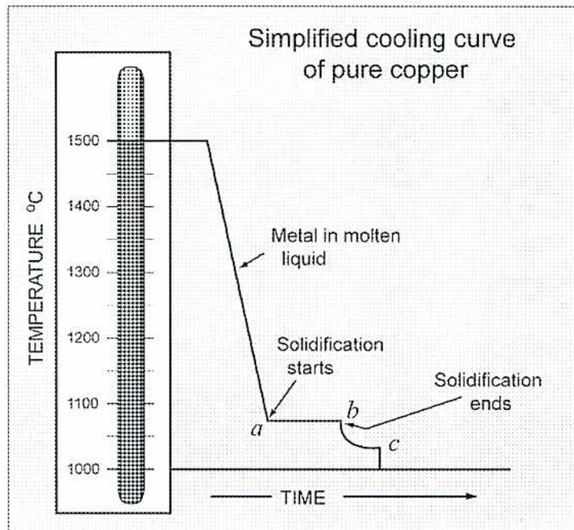
Figure 1
Cooling Curve - Pure Copper
As metal solidifies at the freezing point, A , a rigid atomic structure forms within the solid, holding individual copper atoms in fixed configurations known as unit cells . In most metals, the geometry of the atoms in these unit cells takes one of three basic structures:
Fifteen atoms form the FCC unit cell, shown in Fig. 2. This configuration gives the metals that solidify in this pattern the properties of high ductility, low shear, and low tensile strength but good heat and electrical conductivity. Examples of metals that are FCC in the solid state are gold, aluminum, silver, lead, nickel, and gamma iron (iron between the temperatures of 910°C and 1390°C).
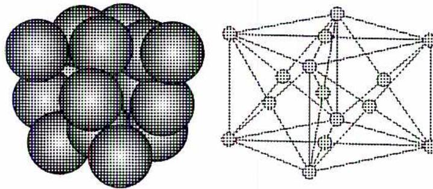
Figure 2
FCC Unit Cell
Nine atoms are contained in the BCC cubic structure shown in Fig. 3. Metals with this configuration in the solid state exhibit high strength, low ductility, and are very resistant to shear deformities. Metals included in this group are chromium, tungsten, molybdenum, vanadium, alpha iron (iron in the solid state below a temperature of 910°C), and delta iron (iron above 1390°C).
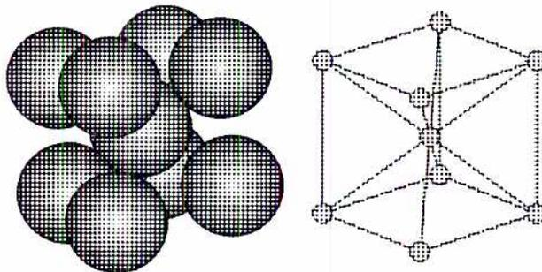
Figure 3
BCC Unit Cell
Seventeen atoms make up the CPH unit cell structure, shown in Fig. 4. This configuration gives the metals that comprise this group intermediate strength and ductility. Metals that fit in this group include zinc, magnesium, cadmium, and titanium.
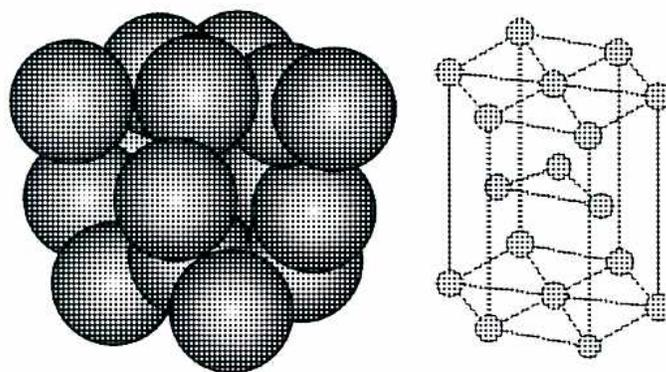
Figure 4
Close-Packed Hexagonal (CPH) Unit Cell
When molten metal cools and solidifies, unit cells become packed together to form three-dimensional crystals that occupy a space lattice . Further growth of these crystals forms dendrites , which look like the branches of an evergreen tree that extend throughout the molten matrix until they contact neighbouring dendrites. These contact surfaces become the crystal or grain boundaries. Any impurities that are not soluble in this solid solution are pushed ahead of the growing crystals and become trapped at the grain boundaries and between the limbs of the dendrites. Fig. 5 (a) shows the side view of a growing metallic crystal dendrite while Fig. 5 (b) is a top view.
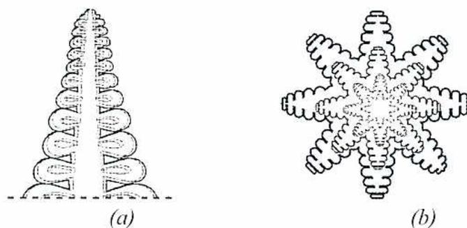
Figure 5
Metallic Crystal Dendrite
Grain size determines important properties of metals. As a rule, smaller grain size increases tensile strength and ductility while larger grain size tends to resist creep and deformation under constant loading but may be more prone to cracking. At the atomic level, the shear strength of metals is determined primarily by the type of unit cell structure exhibited.
Fig. 6 shows the high-atom packed density in a FCC structure in which the top layer is easier to pull than in the BCC structure. This type is found in lead which is ductile with a low shear strength.
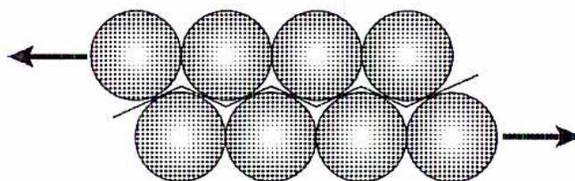
Figure 6
FCC Structure
Fig. 7 shows the low-atom packed density in a BCC structure. To move, the top line of atoms has to jump over the atoms below them. This requires a large force. This type is found in iron, which is hard with a high shear strength.
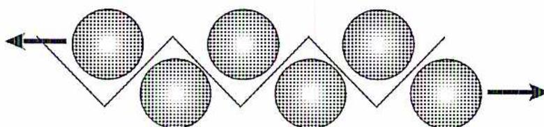
Figure 7
BCC Structure
Polymorphism is defined as the ability of a metal to change to a different unit cell structure depending on its temperature. Most metals and alloys exhibit this property; most important for the study of iron.
The change in atomic cell structure, dependent on temperature, is known as the allotropy of iron. The metal can exist in different physical forms that affect its melting point, hardness, metal solubility, and alloying chemistry. This is very important in determining the way iron reacts with carbon to form steel and cast iron.
Explain the significance of the iron-carbon equilibrium diagram.
Pure iron is a relatively soft, ductile element with low strength that possesses few of the noble properties commonly associated with steel. In large part, the science of steelmaking has been an attempt to understand and control the phase changes of iron, in the presence of carbon and other alloying metals, in order to make the high-strength steels that modern industry relies on. Quality control and materials testing must meet strict and exacting engineering specifications.
Carbon steels are produced by adjusting the carbon content in iron. Carbon steels refer to alloys containing 2% or less carbon, while cast iron contains from 2% to 6% carbon. Carbon steel is divided into three grades:
The form that carbon assumes in the iron matrix (single atoms, graphite flakes, spheres, or molecular combinations such as cementite ( \( \text{Fe}_3\text{C} \) ) an interstitial compound where the smaller carbon atoms fit in the interstitial spaces between the larger iron atoms), the carbon atom's final resting place (inside the unit cell structures or in the exterior intra-granular spaces), and the carbon concentration determine a wide range of physical properties exhibited in the final alloy. In steel, hardness and brittleness increase as the carbon content increases. Softness, ductility and weldability increase as carbon content decreases.
Iron-carbon equilibrium in steel is determined by the:
Fig. 8 is an iron-carbon equilibrium (phase) diagram showing the phase changes that occur as carbon content and temperature vary for carbon concentrations ranging from 0% to 6.5% in a pure iron solvent.
![Iron-Carbide Equilibrium (Phase) Diagram showing temperature vs. carbon content. The y-axis represents temperature in °C from 0 to 1600. The x-axis represents carbon content from 0 to 6.5, divided into STEEL (0 to 2%) and CAST IRON (2% to 6.5%). Key features include: Liquid Region (top right), Liquidus line, Solidus line, Peritectic Reaction at 1492°C (δ + L → γ), Eutectic Reaction at 1130°C (L → γ + Fe3C), Eutectoid Reaction at 723°C (γ → α + Fe3C), and various phase regions such as δ + L, γ + L, α + γ, α + Fe3C, and Fe3C. Critical carbon percentages 0.025, 0.8, 1, 2, 4, and 6.5 are marked. A 'Magnetic Change of Fe3C' is indicated at 210°C.](adb1f42239329fa8283d1a40005f989f_img.jpg)
Figure 8
Iron-Carbide Equilibrium (Phase) Diagram
All phases below the solidus line are solids, and the phase above the liquidus line is molten. The areas between these two lines are pasty state phases where the mixture exists in a solid-liquid state at the corresponding temperature. To use this graph, draw a vertical line through the diagram to indicate the carbon content to be studied and follow the line up or down as the temperature changes. Refer to the definitions below.
Austenite is the structural name of iron in a unit cell of face-centered cubic (FCC) form, called gamma iron that can contain dissolved carbon atoms, up to 2%. All quenching heat treatment procedures must begin from this phase.
Cementite is the common name for iron-carbon in the form of molecular iron carbide ( \( \text{Fe}_3\text{C} \) ).
Eutectic reaction point occurs when the liquid alloy changes directly into solid austenite and cementite without going through a pasty state phase. As the diagram indicates, this only occurs with an alloy composition of 4.0% carbon at a temperature of 1130°C; the lowest melting point of any composition of an iron-carbon mixture.
Ferrite is the structural name for iron in the body-centered cubic (BCC) form. The maximum amount of carbon atoms that ferrite can contain is 0.025% at 723°C. Ferrite describes a structure not a composition.
Lower critical change line is the temperature at which an iron alloy of any carbon composition returns to a body-centered cubic unit cell structure. The diagram indicates this temperature at 723°C.
Pearlite consists of a layered structure (microscopically) of ferrite and cementite. It appears dark-grained in colour and forms in iron-carbon alloys below the lower critical change line at 723°C.
Peritectic reaction is the point where liquid delta iron, in the body-centered cubic form, changes directly into solid austenite without going through a pasty state phase. This occurs at 1492°C.
At room temperature, the low and medium carbon steels (below 0.8% carbon) always have a ferrite component that makes the steels tough and ductile and an iron carbide influence from the pearlite that still makes them relatively hard. These steels have the scientific name "hypoeutectoid steels." Steel having 0.8% carbon would, as it cools to room temperature, change into 100% pearlite. This type of steel is used for railway rails and is called "eutectoid steel."
When the carbon content exceeds 0.8%, steel exhibits hardness and high tensile strength and is used in tools such as axes and chisels. At 723°C these steels become a mixture of cementite and pearlite and have the scientific name "hypereutectoid steels."
Explain the purposes of, and processes used, in the heat treatment of steels.
Heat treatment in steelmaking is a large secondary industry. Its importance is commensurate with the costs and resources spent on the processes used to manufacture steel products with a vast array of different mechanical and physical properties.
Definitions of these processes can be better understood by referring to the partial iron-carbon diagram shown below in Fig. 9. In general, the purpose of heat treating a metal is to force a physical and/or chemical transformation in the alloy and then cool it at a rate, and in such a manner, that it retains the desired properties.
The transformation lines, shown on the previous iron-carbon diagram (Fig. 8), shift with the rate of heating (transformation line rises) and the rate of cooling (transformation line falls). The effect is shown below (Fig. 9) on a section of the iron-carbon phase diagram.
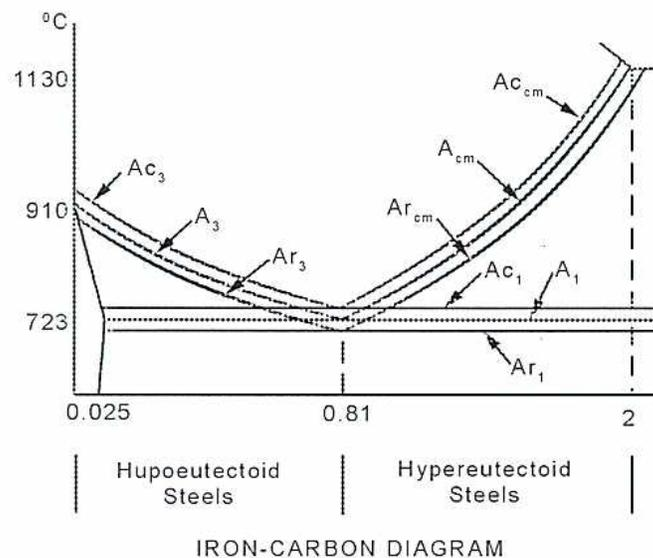
The figure is a partial iron-carbon phase diagram focusing on the eutectoid reaction region. The vertical axis represents temperature in degrees Celsius (°C), with key values at 723, 910, and 1130. The horizontal axis represents carbon content, with markers at 0.025, 0.81, and 2. The diagram shows the shift of critical transformation lines during heating (Ac) and cooling (Ar). For hypoeutectoid steels (carbon content < 0.81), the lines are labeled Ac 3 (heating), Ar 3 (cooling), Ac 1 (heating), and Ar 1 (cooling). For hypereutectoid steels (carbon content > 0.81), the lines are labeled Ac cm (heating), Ar cm (cooling), Ac 1 (heating), and Ar 1 (cooling). The eutectoid temperature is indicated at 723°C. The diagram is titled 'IRON-CARBON DIAGRAM' and is divided into 'Hypoeutectoid Steels' and 'Hypereutectoid Steels' regions.
Figure 9
Eutectoid Reaction Region
Where
A 1 = Critical temperature between pearlite phase field and austenite phase field (eutectic transformation line at 723°C)
| \( A_{r1} \) | = | Critical temperature between pearlite phase field and austenite phase field on cooling |
| \( A_{c1} \) | = | Critical temperature between pearlite phase field and austenite phase field on heating |
| \( A_3 \) | = | Critical temperature between ferrite-austenite phase field and austenite phase field |
| \( A_{r3} \) | = | Critical temperature between ferrite-austenite phase field and austenite phase field on cooling |
| \( A_{c3} \) | = | Critical temperature between ferrite-austenite phase field and austenite phase field on heating |
| \( A_{cm} \) | = | Critical temperature between cementite-austenite phase field and austenite phase field |
| \( A_{rcm} \) | = | Critical temperature between cementite-austenite phase field and austenite phase field on cooling |
| \( A_{cm} \) | = | Critical temperature between cementite-austenite phase field and austenite phase field on heating |
Note: The suffixes "r" and "c" are from the French words refroidissant (cooling) and chauffant (heating).
Annealing processes are heat treatments that produce pearlitic microstructures (ferrite, pearlite, and cementite). They are performed to homogenize the microstructure, increase ductility, remove residual stresses, and improve machinability.
Annealing processes heat the steel to just above the transition temperature required to produce austenite ( \( A_{c3} \) for < 0.8% carbon steels and \( A_1 \) for > 0.8% carbon steels), hold it at that temperature to allow uniform crystal restructuring, and then cool it very slowly to room temperature at a maximum rate of 10°C/hour. The steel is usually left in the furnace with the heat shut off or packed in sand or another material that is a good heat insulator.
Annealing high carbon steels can induce brittleness by allowing larger grain formation; this reduces toughness and ductility. Heat soaking for too long a period encourages grain enlargement in any annealing procedure and increases brittleness in the metal.
Sub-critical annealing or process annealing is a similar process, but the steel is heated to just below its austenite transformation temperature, and then cooled slowly to reduce internal stresses in the metal.
Carbon steels containing less than 0.8% carbon are normalized to:
This process raises the temperature of the steel to approximately 55°C above the upper transition temperature into the austenite region. The steel is held at that temperature just long enough to ensure even heating throughout. It is then allowed to cool in still air at a rate not exceeding approximately 100°C/hour. If a furnace is used, the furnace should have a reducing atmosphere (no free oxygen present) to prevent oxide scale forming on the surfaces.
Referring to the iron-carbon phase diagram in Fig. 8, the normalizing process produces finer and more consistent pearlite layers in the ferrite matrix. Because all high-strength, tough steels have less than 0.8% carbon in their alloy, no transformation products other than pearlite and ferrite are produced by normalizing. The importance of normalizing, which produces tougher steels than any other heat-treatment process, can be appreciated by the fact that the ASME Codes require normalized and tempered materials in many of their specifications for steel forgings and castings. Normalizing low carbon steels makes the steels just hard enough to machine freely, leaving the surface free of tears.
Spheroidizing refers to any process of prolonged heating and cooling of steel, similar to annealing, that converts the carbide content of the matrix into a rounded or spheroid structure. Metal in this form is the softest and most workable.
Hardening processes involve heating mild steel to a temperature above its transformation range (austenizing), and then cooling it quickly to increase hardness by the formation of martensite. Martensite is a structure of fine carbide needle-like grains that are extremely hard and are formed during the transformation from austenite. If the temperature is dropped quickly, the carbon in the austenite does not have time to precipitate as pearlite but instead forms distorted needle-like grains of carbide in the ferrite matrix. The cooling rate varies with the material and is called the critical cooling rate. Cooling is typically done in water, brine, oil, or air and is promoted by the agitation of the liquid or the sample.
Case hardening is a type of heat treatment process that produces martensite in the outer layer only, leaving the interior to retain a tough ferrite-pearlite composition.
Metals parts surface hardened by these methods include: bearings, machine tools, crankshafts, cams, valves, gears, rollers, and hand tools.
Two important thermochemical case hardening processes for low alloy steels are carburizing and nitriding .
Carburizing is achieved by heating the part to its transformation temperature in an atmosphere of carbon monoxide (CO). Carbon diffuses into the skin of the metal increasing martensite formation in this area when the part is later quench hardened.
Nitriding is carried out in a furnace at a temperature below the transformation range of iron (approximately 500°C to 600°C) in an atmosphere of ammonia (NH 3 ). Ammonia dissociates at this temperature into nitrogen and hydrogen. Atomic nitrogen diffuses into the surface layer of the metal forming iron nitrides which are extremely hard. This process, unlike carburizing, does not require subsequent quench hardening.
These two processes can be combined into one operation called carbonitriding when a source of carbon and nitrogen is introduced into the furnace at a temperature above the transformation range of the steel. A less severe quench hardening step is required after this operation (than with carburizing), but the resulting hardening effect is comparable. Nitriding, alone, produces the hardest surface.
Quenching is the rapid cooling of a heated metal. This process is performed to obtain the desired transformation products. Quenching a metal increases strength and hardness and decreases toughness and ductility. Steel with a carbon content over 0.8% is heated above the upper transformation temperature and held there to allow the formation of austenite. The steel part is then quickly cooled by immersing it in a liquid such as water, brine, or oil.
Tempering refers to the process of heating quenched steels to a specific temperature below their lower transformation ranges, which forces the saturated carbon in the martensite to form back into a stable iron carbide (cementite) and ferrite mixture (see Fig. 8), and then cooling the sample to room temperature at a rate that prevents martensite reformation. The primary purpose of tempering is to improve the mechanical properties of the steel. The goals are to increase ductility and toughness with slightly reduced hardness. A sword that has been quench hardened and then tempered will not shatter but will retain a hard sharp edge.
Explain how to interpret metal specifications.
In North America, specifications for metals used to construct pressure vessels and process piping systems lie in the regulatory domain of the American Society of Mechanical Engineers (ASME). They develop codes which are in turn approved by the American National Standards Institute (ANSI). The extensive complexity of these codes are intended for professional engineers who design power and processing plants, and rest, in most cases, outside the scope of responsibility of operating power engineers. A career in power engineering, however, will almost certainly include exposure to construction projects where, to some degree, the onus may fall on a power engineer to monitor the correctness of the materials used. A chief engineer in a power plant may be responsible for purchasing piping, fittings, and equipment to replace or repair plant systems. To this extent, all candidates should be familiar with basic metal specifications.
It should be noted that under no circumstances should an unidentified metal ever be used in a plant application or a careless substitution of materials ever be made. Material specification and selection should be left to the design engineer.
One should also be aware of a problem with counterfeit products in the marketplace that are stamped to suggest compliance with ASME code specifications but are, in fact, inferior and have metallurgical compositions different than that required by the code. These products are forgeries and are dangerous to use. Ordering materials from reputable suppliers helps avoid this situation.
In general, piping, boiler and exchanger tubing, fittings, and structural materials can be categorized as being manufactured from one of the following types of metals:
Most piping in a power plant is made from low carbon or alloy steels. Choosing a metal for a particular job is done on the basis of safety and metal survivability . The engineer has to ensure the material can withstand the most extreme environment it will be used in and still retain a factor of safety.
An engineering piping specification will call for an ASTM (American Society for Testing and Materials) "A" or "B" spec number material of specified grade, dimension, and schedule (wall thickness). "A" material represents carbon steels and alloys while "B" material represents non-ferrous material. ASME Codes B31.1 (Power Piping) and B31.3 (Hydrocarbon Process Piping) offer a complete choice of carbon steel and alloy piping suitable for defined applications in power plants and hydrocarbon processing plants. Compatible flanges and fittings for a particular choice of piping can be found in ASME Code B16.5 (Pipe Flanges and Fittings).
Table 1 shows an example of the most commonly used carbon steel pipe.
Table 1
Standards Comparison
| STANDARD NAME | ASTM A53 | ASTM A106 |
|---|---|---|
| Type | Specification | Specification |
| Title | Pipe, Steel, Black & Hot-dipped, Zinc Coated, Welded & Seamless | Seamless Carbon Steel Pipe for High Temperature Service |
| Commonly used type/grade within specification | Type E, Grade B | Grade B |
| Description | Electric resistance welded, slightly higher carbon (stronger) than Grade A. Not made to Fine grain steelmaking practice | Seamless, good balance between strength & weldability, slightly higher carbon (stronger) than Grade A. Made to fine grain steelmaking practice for more reliable properties |
| End-use | Ordinary or general purpose | Critical service |
Material test reports, or MTRs, are a good resource for monitoring material specifications. Also referred to as certificates of testing , these reports are made available by the vendor to the purchaser upon request. MTRs originate in the smelter where the metal was made and they give a comprehensive chemical and physical analysis of the metal used to manufacture the pipe or fitting. Molten metal is sampled from every ladle after the smelting stage. Each batch of metal (or alloy) is given a heat number which identifies the batch and all the products made from that batch and follows them throughout their lifetime. An MTR identifies the pipe or fitting and
specifies the heat number of the metal it was made from. It documents the chemical composition, the ASME spec number, grade, schedule, tensile strength, and yield point of that metal. The results of any specialized testing, such as a Charpy test for brittleness, and any heat treatment processes that part underwent are also recorded. An example of a material test report is shown in Table 2.
MTRs are valuable tools to monitor the properties and specifications of metals you have purchased.
Table 2
Material Test Report
| ITEM | QUANTITY | DESCRIPTION | NB | MEANS | NORMALIZED | HEAT # | TENSILE STRENGTH N/m 2 | YIELD POINT N/m 2 | ELONGATION % | HARDNESS |
|---|---|---|---|---|---|---|---|---|---|---|
| 5 | 24 | WN 2 1500LB 5/XXS A105 | NE | 11TK | 562 | 244 | 28.2 | 160 | ||
| 7 | 25 | WN 2 1/2 300LB S40 A105 NORMZ | NE | 104TK | 498 | 283 | 32.5 | 144 | ||
| 8 | 10 | SO 2 1/2 300LB A105 NORMZ | NE | 104TK | 498 | 283 | 32.5 | 144 | ||
| 14 | 5 | BLIND 1 1500LB RTF A105 | NE | 100AK | 496 | 213 | 36.3 | 144 | ||
| 19 | 5 | WN 6 150LB S160 A105 NORMZ | NE | 160A1 | 529 | 264 | 28.7 | 148 | ||
| 20 | 225 | WN 6 150LB S160 A105 NORMZ | NE | 27AG | 517 | 238 | 33.2 | 167 | ||
| 23 | 30 | WN 6 300LB S40 A105 NORMZ | NE | 108TK | 521 | 223 | 33.5 | 152 | ||
| SO 6 300LB A105 NORMZ | NE | 24TK | 555 | 298 | 30.8 | 157 |
Explain typical selection of metals for process plant applications (what is selected and why).
Plant operating engineers have many responsibilities, but in strict terms, these do not usually include designating metal specifications for plant pressure piping, vessels, or structural steels. This is the responsibility of professional design engineers. However, close association with professional engineering and construction personnel during construction and the duty to safely operate and maintain the plant afterward put the onus on power engineers to become familiar with the procedures, specifications, and jargon of the trade.
An outline for a construction project might take the following form, as shown in Fig. 10.
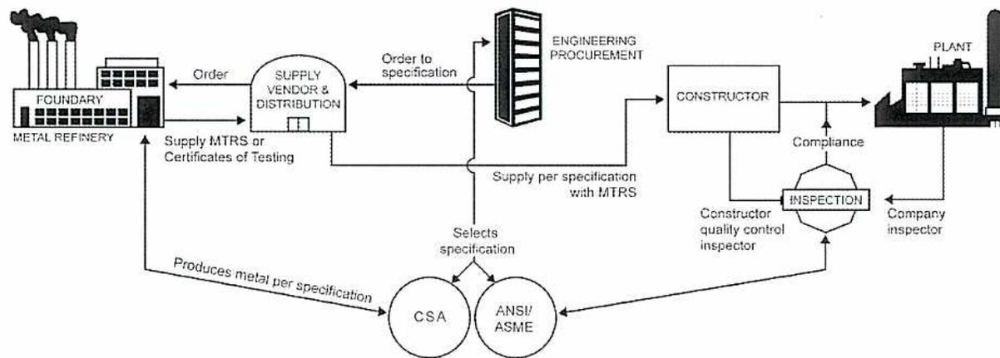
graph LR
Foundry[Foundry / Metal Refinery] -- "Order" --> Vendor((Supply Vendor & Distribution))
Vendor -- "Order to specification" --> EP[Engineering Procurement]
EP -- "Supply per specification with MTRS" --> Constructor[Constructor]
Constructor -- "Compliance" --> Plant[Plant]
Plant -- "Company inspector" --> Inspection{INSPECTION}
Inspection -- "Constructor quality control inspector" --> Constructor
Inspection -- "Compliance" --> Vendor
Vendor -- "Supply MTRS or Certificates of Testing" --> Foundry
Foundry -- "Produces metal per specification" --> CSA((CSA))
CSA -- "Selects specification" --> EP
EP -- "Selects specification" --> ANSI[ANSI/ASME]
ANSI -- "Selects specification" --> EP
Figure 10
Construction Project Outline
An operating engineer would usually become involved in this project as the owner's inspector or be included in an operations staff group responsible for monitoring construction progress and compliance. Operating engineers have to become familiar with the operating systems and design philosophy. As you can see from the above diagram (Fig. 10), all designations for pressure piping and fittings use a Canadian Standards Association (CSA) reference or ASME metal specification.
Regulations controlling the "Design, Construction and Installation of Boilers & Pressure Vessels" require, in part, the submission of "material specifications, size, schedule and primary service rating of all primary piping and fittings used in that construction" for approval and registration to the local boiler authority.
The American National Standards Institute (ANSI), a governing body, has established minimum requirements for manufacturers to identify pipes, fittings, and flanges:
Size refers to as nominal pipe size (NPS); still measured in inches but may be in metric or SI units (always measured in millimetres) and usually designates the outside pipe diameter or the inside flange diameter.
Wall thickness, measured in inches or millimetres, refers to piping, steel plate, vessel walls, and pipefittings other than flanges.
If you examine flanges and pipe elbows in a plant you will see this information stamped onto every fitting. Piping is usually stencilled along its entire length to ensure it can be identified when cut into shorter lengths during construction.
Flanges are always referred to by the pressure rating class of ANSI schedule 150, 300, 400, 600, 900, 1500, or 2500. As per ASME Code B16.5 (Pipe Flanges and Fittings), forged or cast flanges are identified in a material group and under a nominal designation (alloy composition) by "A" numbers and grade. They have different maximum allowable working pressures (MAWPs) depending on their schedule class number (ANSI 150 through 2500) and maximum service temperature. This sounds complicated, but it can be more easily understood by referring to the following chart taken from ASME Code B16.5 (Pipe Flanges and Fittings), page 15:
Table 3
ASME Pressure-Temperature Chart
(Courtesy of ASME)
|
Class
Temp. 0 F |
Working Pressures By Classes, psig | ||||||
|---|---|---|---|---|---|---|---|
| 150 | 300 | 400 | 600 | 900 | 1500 | 2500 | |
| - 20 to 100 | 285 | 740 | 990 | 1480 | 2220 | 3705 | 6170 |
| 200 | 260 | 675 | 900 | 1350 | 2025 | 3375 | 5625 |
| 300 | 230 | 655 | 875 | 1315 | 1970 | 3280 | 5470 |
| 400 | 200 | 635 | 845 | 1270 | 1900 | 3170 | 5280 |
| 500 | 170 | 600 | 800 | 1200 | 1795 | 2995 | 4990 |
| 600 | 140 | 550 | 730 | 1095 | 1640 | 2735 | 4560 |
| 650 | 125 | 535 | 715 | 1075 | 1610 | 2685 | 4475 |
| 700 | 110 | 535 | 710 | 1065 | 1600 | 2665 | 4440 |
| 750 | 95 | 505 | 670 | 1010 | 1510 | 2520 | 4200 |
| 800 | 80 | 410 | 550 | 825 | 1235 | 2060 | 3430 |
| 850 | 65 | 270 | 355 | 535 | 805 | 1340 | 2230 |
| 900 | 50 | 170 | 230 | 345 | 515 | 860 | 1430 |
| 950 | 35 | 105 | 140 | 205 | 310 | 515 | 860 |
| 1000 | 20 | 50 | 70 | 105 | 155 | 260 | 430 |
For example, a common choice for a vapour line flange from the top of a propane chiller in a gas processing plant might be a 12 inch, A 350 LF2, ANSI 300. "ANSI 300" ensures that the flange meets the requirements for the maximum allowable working pressure of the vessel with an included safety factor. Grade "LF2" allows a minimum process temperature of -45°C. The ANSI class number "A" is commonly referred to as the schedule number. Remember, flanges that comply with ASME B16.5 (the industry standard) have to be stamped "B16." If they are not, they are not acceptable for pressure equipment.
Piping schedule can be specified per the following partially complete list and is usually referenced by "diameter-schedule" that indicates pipe size and minimum pipe wall thickness.
Table 4
Piping Schedule
| NPS diameter (inches) | Schedule | Wall Thickness |
|---|---|---|
| 1 inch | 40 (called standard wall) | 3.38 mm (.133 in) |
| 80 (heavy wall or XS extra heavy) | 4.55 mm (.179 in) | |
| 2 inch | 40 | 3.91 mm (.154 in) |
| 80 XS | 5.54 mm (.280 in) | |
| 4 inch | 40 | 6.02 mm (.237 in) |
| 80 XS | 8.56 mm (.337 in) | |
| 6 inch | 40 | 7.11 mm (.280 in) |
| 80 XS | 10.97 mm (.406 in) |
For example, a 2-inch schedule 40 pipe has a wall thickness of 3.91 mm. Note that commercial pipe sizes 6 -inches in diameter and up are only manufactured in even inch diameters. In all pipe sizes, the outside diameter (OD) is more or less constant, and varying wall thickness determines the resulting inside diameter of the pipe.
Although only two common pipe schedules are listed above (40 and 80), pipe schedules range from schedule 10 through schedule 160 with increasing wall thickness. Above schedule 40, the schedule designation is incremented by 40 (e.g. schedule 40, 80, 120, and 160).
Table 5 shows a material selection of commonly used piping and fittings that applies to power and processing plants complying with the following codes: ASME B31.1 (Power Piping), ASME B31.3 (Hydrocarbon Process Piping), and ASME B31.4 (Liquid Transportation Systems).
Table 5
Material Selection—Common Specifications for Carbon Steel Systems
| Commodity | B31.1 | B31.3 | B31.4 |
|---|---|---|---|
| Pipe | ASTM A 106 |
ASTM A 53
API 5L |
ASTM A 53
API 5L API 5LU |
| Pipe – Low Temp | ASTM A 333 Gr.6 | ASTM A 333 Gr.6 | ASTM A 333 Gr.6 |
| Pipe – High Temp | ASTM A 106 | ASTM A 106 | ASTM A 106 |
| Bolting | ASTM A 193 B7 |
ASTM A 193 B7
ASTM A 320 |
ASTM A 193 B7
ASTM A 320 |
| Nut | ASTM A 194 2H | ASTM A 194 2H | ASTM A 194 2H |
| Fittings | ASTM A 234 WPB | ASTM A 234 WPB | |
| Fittings – Low Temp | ASTM A 420 WPL6 | ASTM A 420 WPL6 | ASTM A 420 WPL6 |
| Fittings – High Temp |
ASTM A 234 WPB
ASTM A 216 WCB |
ASTM A 234 WPB
ASTM A 216 WCB |
ASTM A 234 WPB |
| Flanges |
ASTM A 105
ASTM A 181 ASME B16.5 |
ASTM A 105
ASTM A 181 ASME B16.5 |
ASTM A 105
ASTM A 181 ASME B16.5 |
| Flanges – Low Temp |
ASTM A 350 LF2
ASTM A 352 LCB |
ASTM A 350 LF2
ASTM A 352 LCB |
ASTM A 350 LF2 |
| Flanges – High Temp |
ASTM A 105
ASTM A 181 ASTM A 216 WCB |
ASTM A 105
ASTM A 181 ASTM A 216 WCB |
ASTM A 105
ASTM A 216 WCB |
| Valves |
ASTM A 105
ASME B16.34 |
ASTM A 105
API 600 |
API 6D
API 600 |
| Valves – Low Temp |
ASTM A 350 LF2
ASTM A 352 LCB |
ASTM A 350 LF2
ASTM A 352 LCB |
|
| Valves – High Temp | ASTM A 216 WCB | ASTM A 216 WCB |
In these carbon-steel systems, low temp means a limiting design temperature range from \( -45^{\circ}\text{C} \) to an upper specified value \( < 425^{\circ}\text{C} \) , while high temp means a limiting range from \( -29^{\circ}\text{C} \) to an upper specified value \( < 425^{\circ}\text{C} \) . These limits are the lowest temperatures expected from either the processing fluid or the external environment that will affect a particular piping system. They are a design specification based on acceptable Charpy impact testing results that demonstrate these metals do not become brittle within these ranges. Cryogenic systems are common in certain processes, but stainless steels are used because of their resistance to fracture at very low temperatures.
In general, selection of a metal for a pressure piping system has to take into account its suitability when exposed to the stresses of its operating environment, which may include consideration of the following variables:
Cost saving will always be a consideration in the selection of a material if the design engineer has a range of metals that can successfully meet a given specification.
Describe the composition, physical properties, and uses of copper, lead, and tin.
The symbol for copper (Cu) comes from the Latin word cuprum , which means originating from the island of Cyprus. The Romans obtained it by smelting malachite, a hydroxylated copper carbonate ( \( \text{Cu}_2\text{CO}_3(\text{OH})_2 \) ). Although elemental copper can be found free in nature, the most important sources of this metal are the mineral ores chalcopyrite, cuprite, malachite, and bornite. Approximately 90% of the world's primary copper occurs in the sulphide ores chalcopyrite ( \( \text{CuFeS}_2 \) ) and bornite ( \( \text{Cu}_5\text{FeS}_4 \) ). Most copper refining processes use acid leaching, smelting, or electrolysis to separate the metal from its ores. Pure copper metal is reddish brown in colour and weighs 20% more than iron. It is tough, malleable, and ductile and can be forged into sheets and bars and drawn into wire. Other properties that make copper a desirable engineering material are its excellent electrical and heat conductivity and its high resistance to general corrosion. Industry uses this metal in its pure form as conductors in electrical switchgear and related equipment and as electric wire. Copper and its alloys are used in the manufacture of heat exchangers, tubing, piping, valves, pipefittings, sheet roofing, and as feed stock for the production of brass and bronze alloys.
At the beginning of the 21st century, the world production of copper exceeded 16 million tonnes per year with more than half of this refined supply used to produce electric wire and conductors and the remainder used for copper alloy production. Recycling scrap copper in the form of used wire, tubing, and exchanger cores accounted for almost 40% of the North American supply.
Copper, when mixed with other elements, produces a myriad of alloys having special and superior properties to the virgin metal itself. The most commonly used copper alloys are the various brasses and bronzes. There are well over 300 different copper alloys commercially available.
Bronze is an alloy of copper and tin but may also contain phosphorus, lead, silicon, nickel, zinc, and aluminum. It is used to make many groups of cast and wrought bronze alloys including phosphor bronzes, leaded-tin bronzes, nickel-tin bronzes, aluminum, and silicon-bronzes each having distinctive properties. Overall, these alloys have a high
resistance to corrosion and show better machinability and increased strength over the parent metals.
Aluminum bronze, containing up to 12% aluminum, have superior wear resistance and anti-galling properties, are very corrosion resistant and strong, and are used to construct bearings, bushings and machine parts. Phosphor bronze (90% copper, 9.75% tin, and 0.25% phosphorus) is very strong, hard, and resilient and is used to make bushings and high grade springs. Bronze has long been in artistic demand for casting statues, bells, and coinage.
Brass is essentially an alloy of copper and zinc with small amounts of other metals including tin, manganese, lead, nickel, iron, aluminum, and silicon. Ductility maximizes with a 70/30 ratio of copper/zinc and this characteristic can be used, for example, in cartridge brass where expansion sealing in the breech is required. Naval brasses are alloys with small amounts of tin that result in a metal that shows superior resistance to saltwater corrosion, and they are used extensively in these applications. Iron-tin brasses have high strength and hardness and are used in the manufacture of bearings, valves, fittings, and naval propeller castings. Brasses have good machinability and can be welded.
Lead is dense, malleable, soft, lubricious, highly corrosion resistant, and has a low melting point. Lead is extracted from lead sulphide ore (galena). The recycling of scrap from batteries, sheet, cable, bearings, and solder is also a major source of lead. Lead is usually used as an alloy in applications such as lead-acid batteries, ammunition, cable sheathing, bearings, construction and electrolytic refining and plating. Battery grids are the largest single use of lead.
Tin-based and lead-based bearing metals are babbitts or alloys used for lining bearings. Babbitts include compositions of 80% lead (Pb) and less than 5% tin (Sn) to compositions of greater than 80% tin and 0% lead. The metals antimony and copper are usually present as a small percentage. Other metals which may be used to add strength are cadmium, nickel, bismuth, arsenic, zinc, and tellurium.
Lead-based alloys are commonly called white metal. White metal is the name given to alloys made from lead and tin with small amounts of other elements, specifically, antimony, bismuth, silver, and zinc. White metals are used chiefly for bearing materials because of their low melting point, which allows easy casting of bearing shells. This metal shows sufficient strength and ductility not to crack and squeeze out under heavy loads. In addition, white metals are soft enough to contour to a shaft, preventing high points on bearing surfaces, and because of their good thermal conductivity, heat is readily dissipated away from operating bearing surfaces.
Babbitt metal is the common name for a tin-based alloy (89% tin, 7.5% lead, 3.5% copper) that is widely used for high speed and light bearing load applications. An example of a lead-based white metal used for bearing applications at slower speeds and heavier shaft loads, is an alloy having a composition of 75% lead, 15% antimony, and 10% tin. This alloy is tougher but less ductile than the high-tin content Babbitt alloy.
Tin is extracted from oxide ores. It is a soft, white metal with good corrosion resistance and lubricity. Tin is mainly used in tinplate and as an alloying addition. Tinplate production is the largest single use of tin. Tin plate is used to make containers and packaging for food and also non-food items.
Solders are divided into tin-lead solders and other solders based on various metals. The tin-lead group includes high-lead, general purpose, and high-tin solders.
High-lead solders, containing 80% lead, are used for joining tin-plated containers and automobile radiators. General purpose solders vary from 25% tin/25% lead to 50% tin/50% lead.
The tin-lead phase diagram, Fig. 11, indicates that a wide range of solder alloys are possible, depending on the melting range (pasty stage) required. For example, wiping a lead pipe to lead pipe joint requires a lengthy pasty stage, but electronic components require the lowest melting point and no pasty stage (eutectic) to minimize damage to printed circuit boards.
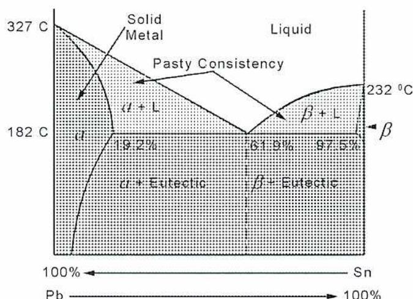
The figure is a binary phase diagram for the lead-tin (Pb-Sn) system. The vertical axis represents temperature in degrees Celsius (°C), with key points at 182°C (eutectic temperature), 232°C (melting point of pure Sn), and 327°C (melting point of pure Pb). The horizontal axis represents composition: the left side is 100% Pb (melting at 327°C) and the right side is 100% Sn (melting at 232°C). Arrows indicate Sn concentration increases to the right and Pb concentration increases to the left. Key composition points along the 182°C isotherm are 19.2% Sn, 61.9% Sn (eutectic point), and 97.5% Sn. The diagram identifies several regions:
-
Liquid
: Above the liquidus lines.
-
Solid Metal
: The
\(
\alpha
\)
phase (solid solution of Sn in Pb) on the far left and
\(
\beta
\)
phase (solid solution of Pb in Sn) on the far right.
-
Pasty Consistency
: The two-phase regions
\(
\alpha + L
\)
and
\(
\beta + L
\)
between the liquidus and solidus lines.
-
Solid Regions
: Below the 182°C eutectic line, the regions are labeled
\(
\alpha + \text{Eutectic}
\)
and
\(
\beta + \text{Eutectic}
\)
.
Figure 11
Tin–Lead Phase Diagram
Describe the composition, physical properties, and uses of aluminum and aluminum alloys.
Pure aluminum metal has a density of \( 2699 \text{ kg/m}^3 \) . In the useful lightweight metal class, it is only surpassed by magnesium at \( 1738 \text{ kg/m}^3 \) . In comparison, iron has a density of \( 7870 \text{ kg/m}^3 \) . Light weight, with the additional properties of very good heat and electrical conductivity, make this metal almost indispensable.
Aluminum has only been commercially produced in the last century because of the difficulty of separating the pure metal from its abundant ores (which comprise over 8% of the earth's crust). Bauxite, a reddish-brown ore, with abundant sources located in Australia and Jamaica, is a complex mixture of minerals containing mostly aluminum hydroxides ( \( \text{Al}_2\text{O}_3 \cdot 3\text{H}_2\text{O} \) ). Through a caustic leaching operation called the Bayer process , alumina ( \( \text{Al}_2\text{O}_3 \) ) is produced from bauxite. Alumina is then fed to an electrolytic cell in the presence of the mineral cryolite ( \( \text{Na}_3\text{AlF}_6 \) ). An electric current fuses these minerals together forming molten aluminum which settles and is tapped off the bottom of the bed. This final refining step is known as the Hall-Heroult process .
Elemental aluminum has a relatively low tensile strength and is very malleable and ductile, but, as with other metals, its alloys have properties that are far superior, and it is these alloys that are widely used in industry.
Aluminum is combined with other metals such as copper, silicon, manganese, zinc, nickel, magnesium, chromium, and lithium to produce hundreds of important alloys that show a remarkable range of strength, fatigue resistance, toughness, and light weight. These properties make them ideal for use in aircraft and spacecraft construction, automobile design, industrial plant equipment, military hardware, and domestic implements.
Aluminum, combined with copper, is a good example of a useful common alloy. This alloy is produced by heating aluminum above \( 550^\circ\text{C} \) and then saturating the crucible with copper to form a solution that contains about 5 % copper by weight. Since this matrix is not positively soluble in the solid state, the copper tends to be rejected by the aluminum during cooling. But, if the mixture is quenched with cold water, the copper does not have time to precipitate into copper crystals and instead forms an intermetallic
compound ( \( \text{CuAl}_2 \) ). This process is called precipitation hardening and produces an alloy that is 5 to 6 times stronger than pure aluminum.
The \( \text{CuAl}_2 \) micro-particles are extremely hard and interfere with the surrounding aluminum atoms by preventing easy slippage of their atomic-plane structures, resulting in a hard, strong alloy. Carbon atoms in an iron matrix react very much the same way in converting iron into steel.
Recently, strong interest has been shown in aluminum-lithium alloys and aluminum metal matrix composites (MMC) which have very high strengths, are heat resistant, durable, and light weight. They are used to manufacture machine parts, such as diesel engine pistons and high load-bearing components for the aerospace industry. Metal matrix composites are made by solidifying molten alloys that have been reinforced with boron or ceramic fibres. Further research in this direction holds promise for many new applications.
Aluminum has another remarkable property. It is unique in being the only metal known that increases in tensile strength as its temperature decreases. This property is utilized in the construction of large plate-fin, aluminum-alloy heat exchangers, called cold boxes, with multiple internal flow paths that display incomparable heat exchange efficiency in cryogenic process plants. A pair of these cold box heat exchangers installed in an ethane extraction plant under construction is shown in Fig. 12. Temperatures drop to \( -100^\circ\text{C} \) in the coldest sections. Note the number of flanged connections; each represents an associated internal passage.
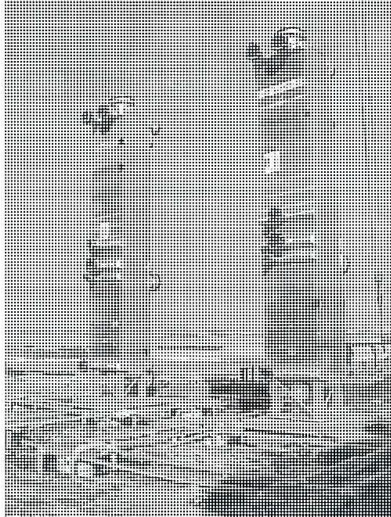
Figure 12
Cold Box Heat Exchangers
Aluminum and its alloys are also used extensively in the electrical field as conductor-metal in large electric transmission lines, switchgear equipment, and motor control centre main bus bar connectors. This electrical conductor does not have to be surface protected because aluminum becomes highly resistant to corrosion by forming a thin surface oxide layer that protects the underlying base metal from any further deterioration. For this reason, and because of its high electrical conductivity, strength, and light weight, most high-voltage transmission systems use strand-twisted aluminum alloy conductor cable that, in systems above 250 kV, can exceed 28 mm in diameter. Because of the mass reduction when compared to copper-clad steel cable, utility companies can place the transmission towers much farther apart and realize large cost savings when constructing these lines using aluminum wire cable.
Cross-sectional views of modern conductor cables used in large electric transmission systems are shown in Fig. 13. The conductor is made from an aluminum-magnesium-silicon alloy with high electrical conductivity and, due to its rigorous corrosion resistance properties (no steel core), it is usually installed in areas that have severe, corrosive environments such as seacoasts. This type of cable is also used in urban areas, where supports are close together, omitting the need for higher strength steel core cable which is more expensive.
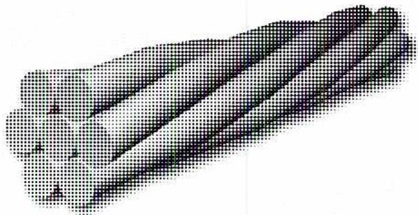
A perspective view of a conductor consisting of several parallel strands of aluminum alloy wire. The strands are cylindrical and have a slightly textured surface, running along the length of the conductor.
Figure 13
All Aluminum Alloy Conductors (AAC)
The conductor, shown in Fig. 14, is made with a solid or stranded steel core surrounded by aluminum stranded wire and can be manufactured with a wide range of tensile strengths that vary with the size of the inner steel core. They are used for river crossings and other long-span installations.
An advantage of this type of conductor is its:
Disadvantages are:
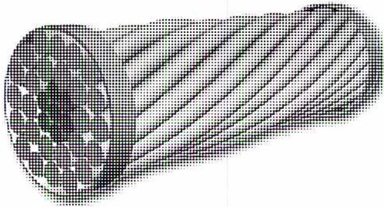
A perspective view of an ACSR conductor. It features a central core made of steel wires, which is surrounded by an outer layer of aluminum stranded wires. The cross-section at the left end shows the internal structure of the steel core and the surrounding aluminum strands.
Figure 14
Aluminum Conductor Steel Reinforced (ACSR)
In an attempt to increase tensile strength without sacrificing load carrying capacity, an innovative manufacturing method uses a continuous carbon fibre-polymer resin composite to replace the steel inner core of the ACSR conductor. The aluminum conductor composite core (ACCC), shown in Fig. 15, is 75% lighter than steel with comparable tensile strength for a given wire diameter and completely unaffected by corrosion.
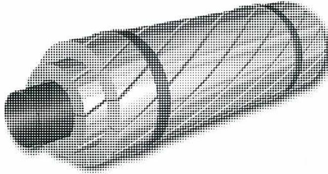
Figure 15
Aluminum Conductor Composite Core (ACCC)